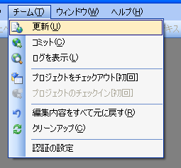
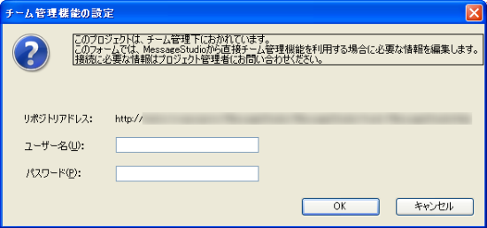
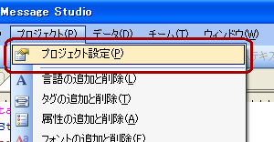
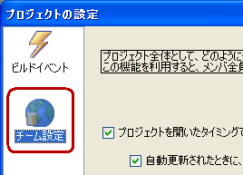
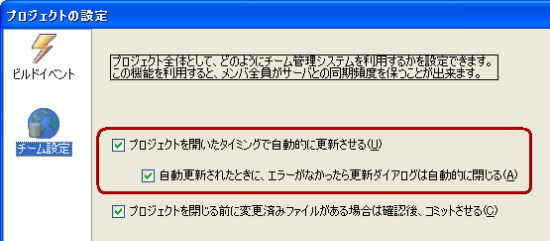
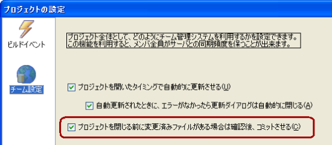

Basic Controls of the Team Feature
Basic Controls
In order to perform basic functions, you can choose the type of action from the "Team" Menu.

Update
The latest version of a file on the server will be downloaded from the repository (the server managing the project). This controls can be used when the Team Management Feature for the Project is active. It will only pull down content that has been updated by others so it's much more efficient than Checking Out.
If the updated file has been revised locally, then it will automatically be merged but if it cannot be automatically merged, it will be marked as confliting and will have to be manually merged. For information on merging and conflicts, please check Conflicts and Merging.
Commit
The edited or newly added file will be uploaded to the repository (server where the project is managed). If the file that you have edited has been revised in another location and if those changes have already been Committed to the repository an error will occur and it will not be uploaded. In this case, you will need to "Update" once before Committing. When you commit, you can add a comment and leave reference notes about revisions you have made for others. Past comments can be reviewed in "Display Log."
Log Display
You can review the contents of past Commits and accompanying comments. You can see what revisions were made and when. To make more efficient use of this feature, it is best to leave more detailed comments when you Commit. For more information, please see Log Display.
Display Differences
If someone has Commited data, all that information will be saved to the server. By using the Display Differences feature, you can compare previous revisions using the server information. For more information see, Display Differences.
Revert Edited Contents
This will revert the revised file to its pre-revised condition. By pre-revised that means revisions added with the last Commit. With this feature, users can feel free to edit files without having to worry about backing up files. While this feature is handy, this option will also revert edits that you might want to keep so please practice caution when using this feature.
Clean Up
If for some reason, the above control doesn't complete correctly the file might become locked. If this happens, all team management controls will be errors. In situations like this, the Clean Up Command will unlock the file and team management controls will be restored.
Authentication Settings
This will set authentication information (account and passwords). For more information, please check "Authentification Settings」".
File Status
| Depending on the status of a file, the icon on the lower left will change. You can see what the current status of a file is by checking this icon. | |||||||||||||||||
| Status | Meaning | Explanation |
|---|---|---|
| Not edited | This file has not been edited. | |
| Editing | This file has been edited. Please Commit when ready. | |
| Newly Added | This is a file that was newly added. Please commit when ready. | |
| Conflict Status | There is a conflict with a repository file. A conflict will occur when you have made a revision to the same cell that another user has. For more information on conflicts and merging please check Conflicts and Merging. | |
| No Mark | This file is not compatible with Team Management Functions |
Authentication Settings
| Please enter the new username and password and press the OK Button. | |
 |
Setting the Team Management Function
| In order to set Team Management Functions, from the menu first choose "Project (P)" then "Project Settings (P)", finally open the "Project Setting" window. |  |
| A list of features that can be set will appear on the left hand side of the window. Choose "Team Settings" from here. |  |
Auto Update |
|
| By putting a check mark next to these entries, when the project is openned using the Message Studio, an "Update" will automatically begin. This setting will be applied for all users using the Team Management Function for this project. | |
 |
|
Commit Prompt |
|
| By placing a check mark next to this entry, when this project is closed, if there is a file that has not been committed, the user will be prompted to Commit the file. This setting will be applied to all users using the Team Management Function. | |
 |
|
 Introduction
Introduction Language Settings
Language Settings Editing Messages
Editing Messages Shared Binary Format
Shared Binary Format